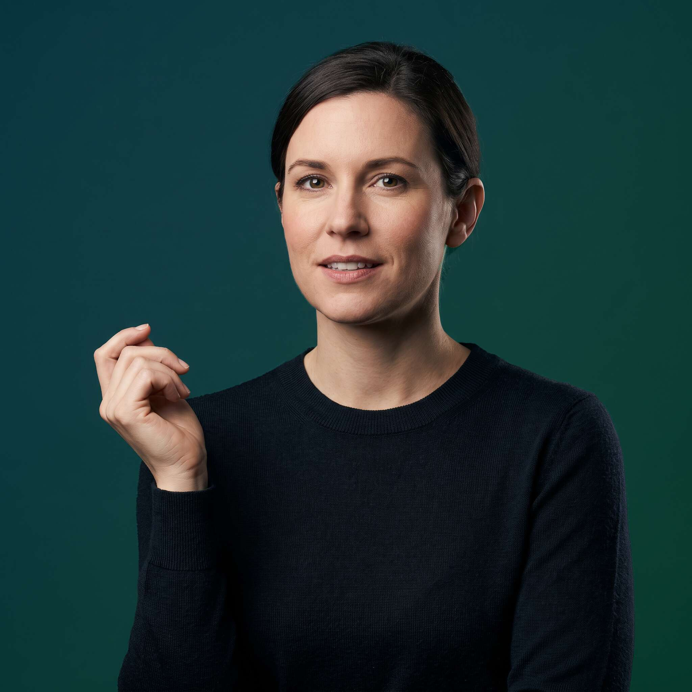

A campaign built on one key visual: the person at the centre of the system, and the system — governed, orchestrated, scaled — opening around them. Whatever their job title says, they're a systems architect now.
One decision today. A different person a year from now.
Every execution in this deck sells competence — governed, orchestrated, scaled. This is the argument underneath it. You're not just adopting a tool, you're choosing who you become. Nothing here changes what's already built — this is the felt version of the same thesis, meant to sit near the top so the mechanics that follow land as the "how," not the "why."
"This is your" runs light and small; "MOMENT" carries the headline, all caps, full weight — with a radar pulse radiating from behind the O and bleeding off the frame. The gradient ring is up to 3px now, and the icons no longer sit in one uniform orbit — the bot marker overlaps the photo itself, like a badge.

Every part of the construction is carrying a piece of the brief — including the parts we've just added.
The rings expand from behind the O in MOMENT and bleed past the frame edge — the campaign line isn't just typeset, it's the thing generating the whole system radiating around the person. Read them as ripples: the moment is the point of impact, and everything else in the system — the icons, the orbit, the agent badge — is just what that impact sends outward. Same construction logic as the aperture rings, at headline scale.
A 3px conic sweep through Green, Cyan, Iris and Cerulean sits directly on the photo edge — thick enough to read at a glance, still a hairline against the person rather than a heavy frame.
The four system icons now sit at different distances from the centre instead of one uniform ring — some closer, some further. The bot marker breaks the orbit entirely and overlaps the photo edge, like a badge: the clearest possible signal that the agent is attached to this specific person, not just floating in the system nearby.
The Ambient background gradient stays spent once, hero-scale only. Everything else — including the new pulse and ring treatments — reads as line work and colour accents on flat Midnight, not a second atmosphere.
Every person wears the same AI-gradient ring, now a visible 6px. The two icons per tile sit at different distances from the centre rather than mirrored equally.
Flat Midnight canvas, no second background gradient. Mockups only; final CTA copy to be confirmed with marketing.
Each pillar pairs a two-beat headline with a post angle. Hand these straight to whoever's producing the organic and paid social calendar.
Thought-leadership carousel: how context, retrieval and validation actually work in an agentic workflow — no hype, just mechanics.
Contrarian short post: why "move fast" and "stay governed" are usually pitched as opposites, and why that's the wrong frame.
Practitioner-style post: what it actually looks like to give an agent a role, an owner and an escalation path.
Hero campaign post: the master key visual, campaign line, link to the lander. Paid-led, highest production value.
Executive outreach line: the tension every leader in the room is already feeling, named plainly, no resolution pitched until slide two.
The enemy pillar — short, sharp, argumentative. Names the scattered pilot and the bolt-on tool. This is the one people reply to.
Every headline is a moment statement, then a consequence statement. Colour carries the break — never italic, never bold-within-headline.
| This is your moment. | Put AI where the work happens. | Master lockup |
| You're a systems architect now. | Whatever your title says. | Personal identity line |
| You know how the work moves. | Now change how fast it moves. | Campaign lander |
| AI isn't a tool you pick up. | It's a harness on a current already running. | Thought leadership |
| Random acts of AI end here. | Connected. Governed. Scaled. | Product pages |
| A career spent learning how work moves. | One moment to redesign it. | Practitioner content |
| Move fast today. | Build for what changes tomorrow. | Exec outreach |
| They're already on the team. | Now put them on the chart. | LinkedIn organic |
Mapped directly to Brand & Design System v1.6 — no new tokens introduced.
| Type | Montserrat 800, −1.6 to −2px tracking, for every headline. The campaign line splits weight: light 300 for "This is your," heavy 800 all-caps for "MOMENT." Inter for body copy. JetBrains Mono, uppercase, for eyebrows, ring labels and tags. |
| Radar pulse | 3 concentric rings behind the O in MOMENT, 1.5px stroke, Green fading to Cyan, sized to bleed past the frame edge on hero-scale formats. Same construction logic as the aperture rings, at headline scale. |
| Core voice | Green #00D880 — the moment, the person, the primary identity. |
| System register | Cyan Iris Cerulean — the platform's own AI gradient. |
| Amber | #FFAD1F — performance/scale moments only. |
| Gradient ring | 3px conic sweep of Green → Cyan → Iris → Cerulean directly on the photo edge, every execution. |
| Background gradient rule | The full Ambient background gradient (Green + Cyan halos) is spent once, hero-scale only. Every tile, format and card downstream stays flat Midnight. |
| Light-site variant | For placement on lighter pages (website, blog header, light-mode deck): frame flips from Midnight to white/canvas, headline and logolock flip from white to Ink. Gradient ring, aperture strokes, icon badges and CTA are unchanged — same construction, inverted ground. |
| Icon placement | System icons sit at varied distances from the centre — never one uniform orbit. The bot glyph is the exception: it overlaps the photo edge directly, like a badge, signalling the agent attached to that person specifically. |
| System iconography | Lucide-style 2px outline icons — workflow, share, shield, check, bot. No filled colour badges beyond the dark backing circle, no robot or humanoid face. |
| Photography | Bust/chest-up cutout, filling most of the frame, deep charcoal near-black background blending directly into the frame. Focused, determined, agreeable — not laughing, not confused, not stiff. |
| Personal identity | Never label a person by department or job title. The identity tag is always "Systems Architect." |